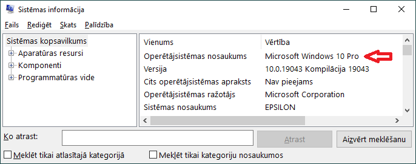
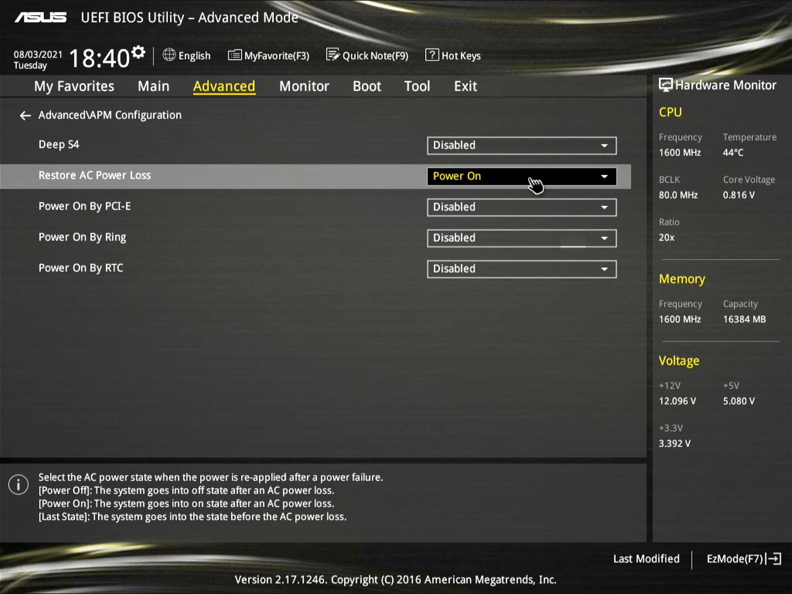
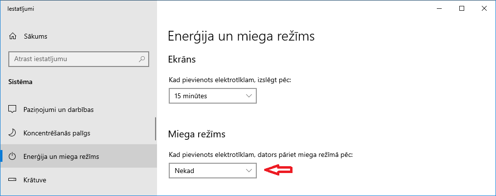
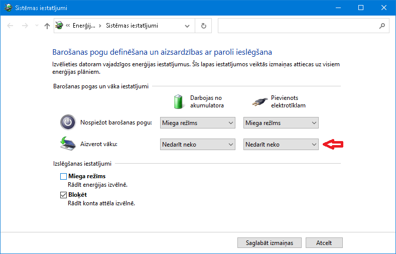

Attālā darbvirsma (Remote Desktop) pieejama Windows Pro versijām. Par to var pārliecināties sistēmas informācijas logā.
Mājas versijām var lietot, piemēram, kādu no VNC variantiem vai TeamViewer līdzīgiem produktiem, bet tos šeit neapskatīsim. Lai pieslēgtos ar attālās darbvirsmas klientu ārpus lokālā tīkla, ieteicams izmantot virtuālo privāto tīklu (VPN), kas arī ir atsevišķs temats.
Laboratorijas datoru ieteicams pieslēgt nepārtrauktās barošanas avotam (UPS) un papildus nodrošināt tā automātisku startēšanu pēc enerģijas padeves atjaunošanās. Šis iestatījums dažādiem modeļiem ir atšķirīgs un varbūt vispār nav pieejams, bet varētu izskatīties apmēram šādi.
BIOS iestatījumiem var piekļūt nospiežot pareizo taustiņu (dažādiem modeļiem atšķirīgi, Delete, F2, F10, u. tml.) tūlīt pēc datora startēšanas.
To var izdarīt enerģijas iestatījumu logā.
Klēpjdatoriem jāatspējo miega režīma ieslēgšana pēc vāka aizvēršanas.
